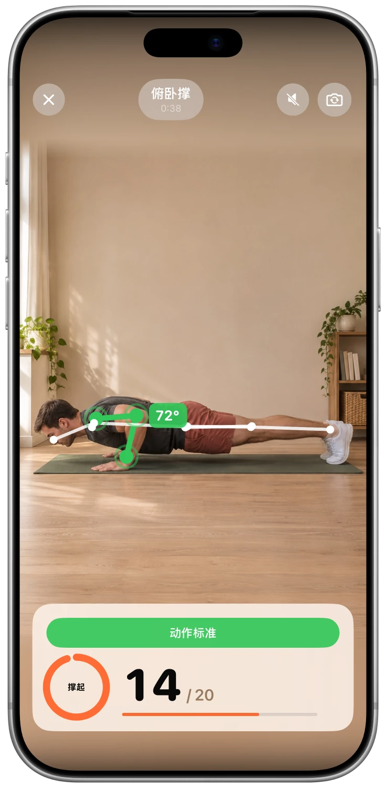

选择要限制的应用
选择希望减少使用的应用。Unlocky 使用 Apple 的“屏幕使用时间”功能来锁定它们。


真实应用截图
功能亮点
选择希望减少使用的应用。Unlocky 使用 Apple 的“屏幕使用时间”功能来锁定它们。
选择俯卧撑、深蹲或开合跳。iPhone 摄像头会实时计算动作次数并提供反馈。
自行设置奖励和每日上限。获得的时间只在使用所选应用时扣除，用完后会重新锁定。
看看应用
真实截图，让您更好地了解应用内容。
FAQ
开始使用前，先了解这些。
Unlocky 使用苹果的“屏幕使用时间”功能。您可以在设置过程中选择应用程序并授予访问权限。您可以在 iPhone 的“设置”中撤销访问权限。
Unlocky 不会录制你的视频。相机画面会直接在你的 iPhone 上实时分析。视频和照片不会被保存或上传。
可以。选择俯卧撑、深蹲或开合跳，并设置每组动作可换取多少分钟。每日上限帮助你控制使用时长。
是的。Unlocky 没有订阅或付费墙。它需要一台运行 iOS 17 或更高版本的 iPhone。
免费 · 无需订阅 · 无需注册
请按照自己的节奏进行运动，如果感到任何不适，请停止。如果您有健康问题，请在开始新的锻炼计划之前咨询医生。